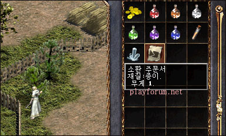

|
2003年6月4日
韓國測試伺服器6月4日檔案內容
今天韓國測試伺服器加入了百多個SPR檔案，內裡有吸血鬼(Vampire)及另一未命名怪物的圖像（高崙僵屍？受魔化的高崙？），他們應該是Lineage Part2的新怪物，相信在未來幾天還會陸續更新檔案。
韓國測試伺服器出現召喚卷軸
來源：Lineage Playforum
英文翻譯：Lineage Compendium

在韓國測試伺服器出現了召喚卷軸，暫時此卷軸是沒有作用的，而且GM亦對此卷軸不作任何意見，這可能是仍然測試中的道具。
美國正式伺服器6月4日更新內容
來源：美國天堂官方網站公告
1. 改善了NPC遲緩的問題，狗隻、召喚及迷魅寵物應該會更貼近主人。請注意，其他怪物亦會以預期的速度移動，可能會明顯地比目前的速度快。因此在打熟識的怪物時大家仍要提高警覺。
2. 修正了部分NPC對話的錯字。
3. 修正了門不能正確打開的錯誤。
4. 部分血盟小屋的女僕的位置重新編位。
5. 遺忘之島的"低牆"更改為"高牆"，遠距離武器及魔法攻擊不能再穿越。
6. 很多傳送師會提供傳送往亞丁城鎮的服務。
7. 說話之島及銀騎士村莊的競技場內現在是安全區域。
8. 假如對方的交易視窗取消了，你的交易視窗亦會消失。
9. 在創立角色畫面中加入了新職業相關的資料，在目前新職業是不能倉立的。
10. 加入了/duel（決鬥）指令，要使用這個指令的話，請面向你想決鬥的對手並輸入"/duel"。假如對方接受了，你們可以互相打鬥，而且沒有掉下、變紅或增加PK次數的懲罰。但在決鬥死亡是會掉下經驗值的。你不用按CTRL也可以直接攻擊對手，假如在決鬥中使用傳送離開，便會輸了這場決鬥。決鬥指令可以在安全區域中使用，但不能在安全區域中戰鬥。
11. 重新啟用/music指令，鍵入"/music on"會開啟背景音樂，"/music off"會關閉背景音樂，"/music"則會顯示音量控制。
12. 加入/mail（郵件）指令去開啟或關閉遊戲中郵件的接收。 |